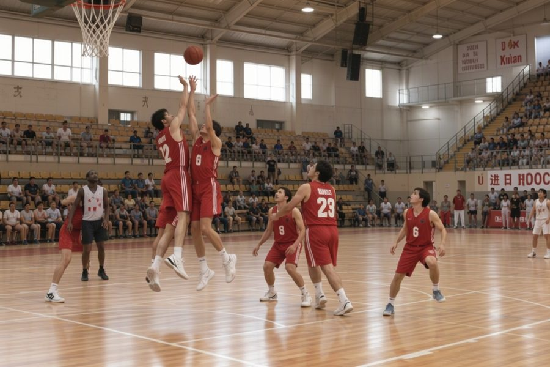
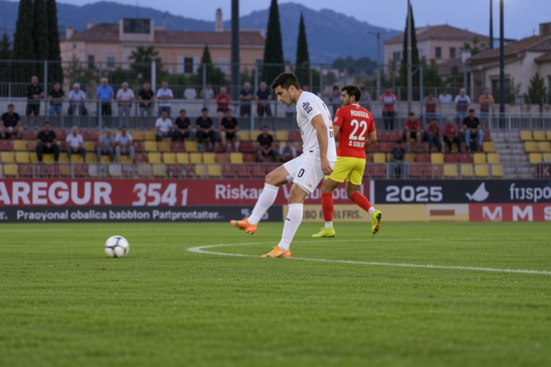
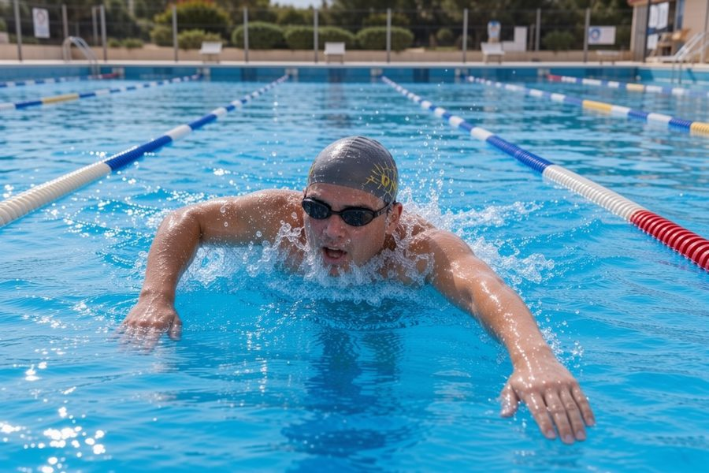
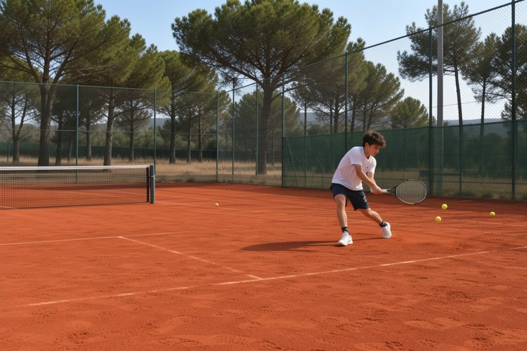
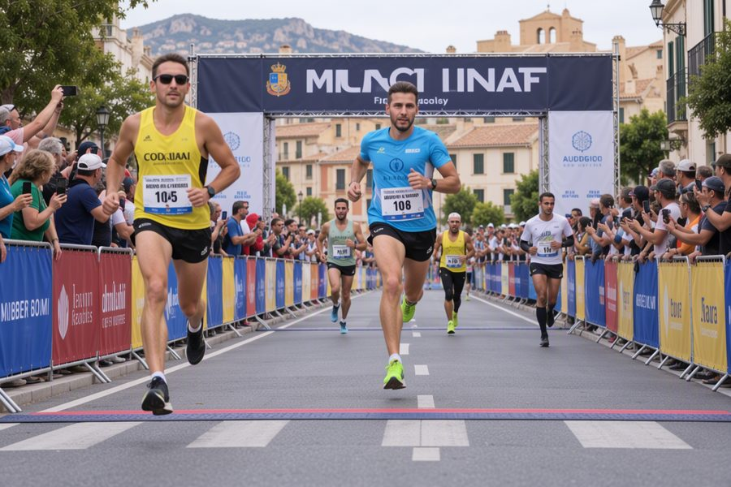
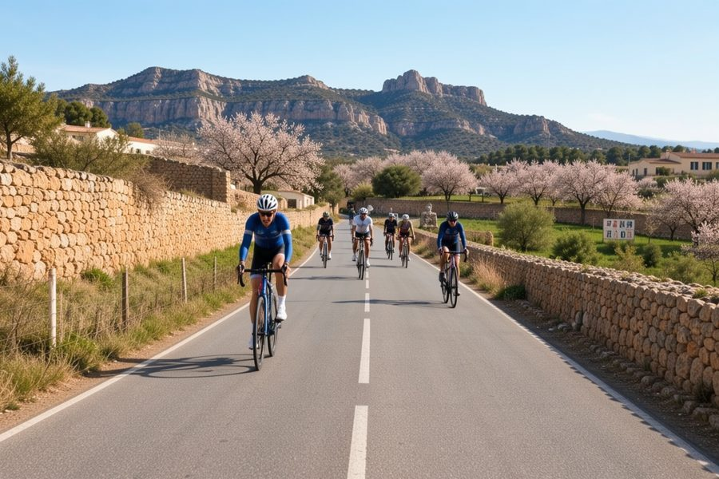

El bàsquet guanya el derbi
78 a 71 en un pavelló ple.
Dimecres, 18 de novembre de 2026 · Manacor
Tota l’actualitat esportiva de Manacor i comarca.

78 a 71 en un pavelló ple.

Un a un, amb un gol al darrer minut.

Els 100 lliures, per davall del minut.

Seixanta inscrits, de 10 a 16 anys.

La sortida, diumenge a les nou.

Vint quilòmetres entre ametllers.